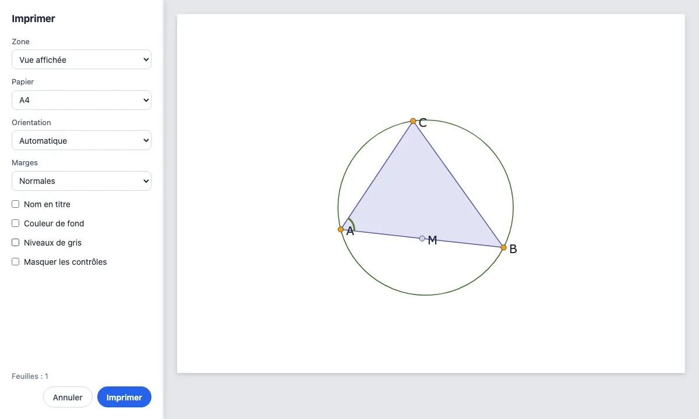
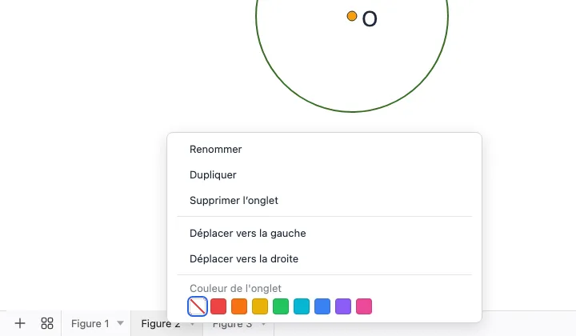

Ouvrir et enregistrer
Ouvrir
Ouvrir charge un fichier :
| Extension | Origine |
|---|---|
.dgo |
DocGeo, format natif |
.dgp |
DGPad, importé |
.ggb |
GeoGebra, importé |
On peut aussi faire glisser l’icône du fichier sur la page, dans l’éditeur comme dans le lecteur.
La figure ouverte remplace la figure en cours et vide l’historique d’annulation.
Une figure en ligne s’ouvre aussi par un lien (voir Partager une figure par un lien).
Le menu Fichier propose aussi Ouvrir… (Ctrl O) et Nouvelle figure, qui part d’une figure vide.
Documents récents
Fichier › Ouvrir un document récent liste les dix dernières figures ouvertes ou enregistrées, la plus récente en tête : dans Chrome et Edge, les fichiers de l’ordinateur ; dans tous les navigateurs, les figures ouvertes par un lien. Le navigateur peut redemander l’autorisation de lire le fichier. Un fichier déplacé, renommé ou supprimé depuis est signalé et retiré de la liste. Effacer la liste la vide.
Import incomplet
Un élément DGPad ou GeoGebra non pris en charge est ignoré avec ses dépendants ; la consigne en donne la liste (« Non importé : … »). Le détail est dans Import DGPad et GeoGebra.
Enregistrer
, Fichier › Enregistrer ou
Ctrl S enregistre la figure en
.dgo. La vue (zoom, orientation 3D, repère) est
enregistrée.
Dans Chrome et Edge, DocGeo enregistre comme une application :
le premier enregistrement demande où ranger le fichier, les
suivants le remplacent sans rien demander. Une figure
.dgo ouverte par ou déposée
sur la page est réenregistrée dans son fichier ; le navigateur
demande une fois l’autorisation de le modifier. Une figure DGPad
ou GeoGebra n’est jamais écrasée : son premier enregistrement
crée un fichier .dgo.
Enregistrer sous… (Ctrl
Maj S) choisit un autre fichier.
Le nom du fichier s’affiche au bout de la barre de menus ; une pastille rouge signale des modifications non enregistrées. Elle disparaît à l’enregistrement, ou si l’on annule jusqu’à l’état enregistré. Déplacer ou zoomer la vue ne compte pas comme une modification.
Dans les autres navigateurs (Firefox, Safari), ou quand DocGeo
est intégré à une autre page, l’enregistrement télécharge la
figure, sous le nom de la figure ouverte (figure.dgo
pour une nouvelle figure).
.dgo est le seul format d’enregistrement : ouvrir
une figure DGPad ou GeoGebra puis l’enregistrer la convertit.
Récupérer une figure non enregistrée
Tant qu’une figure a des modifications non enregistrées, DocGeo en garde une copie dans le navigateur. Si l’éditeur se ferme sans qu’elle soit enregistrée (fenêtre fermée par mégarde, panne), elle apparaît, datée, sous Figures non enregistrées en tête de Fichier › Ouvrir un document récent : choisie, elle revient, toujours marquée comme non enregistrée. Ces copies sont gardées quatorze jours, dix au plus ; Effacer la liste les efface aussi.
Cette copie reste dans le navigateur de cet ordinateur : elle ne remplace pas l’enregistrement. Rien n’est gardé quand DocGeo est intégré à une autre page.
Imprimer
Fichier › Imprimer… (Ctrl P) montre l’aperçu des feuilles à côté de leurs réglages. Imprimer ouvre ensuite l’impression du navigateur, qui sait aussi enregistrer en PDF.

La figure remplit la feuille jusqu’aux marges : droites et courbes vont jusqu’au bord. Elle n’est jamais agrandie au départ : traits et étiquettes gardent leur taille à l’écran.
- Glisser sur une feuille déplace la figure, la molette la zoome. La vue de l’éditeur ne change pas.
- Zone : Vue affichée centre la feuille sur ce que montre l’écran, sans la partie cachée par la palette ou les propriétés ; Figure seule la centre sur les objets dessinés.
- Papier, Orientation (Automatique : selon la zone) et Marges. Changer ces réglages, la zone ou le titre recadre les feuilles.
- Nom en titre écrit le nom de la figure, ou de la page, en haut de la feuille ; Couleur de fond imprime le fond de la figure ; Niveaux de gris retire les couleurs ; Masquer les contrôles retire curseurs, cases à cocher, champs, listes et boutons.
- Dans un classeur, Toutes les pages imprime une feuille par page.
Échap ou Annuler ferme l’aperçu. Les réglages restent les mêmes jusqu’à la fermeture de l’éditeur.
Classeurs : plusieurs pages
Un classeur réunit plusieurs figures, ses pages, dans un seul
fichier .dgo. Ses onglets, sous la figure, montrent
une page à la fois.

- Fichier › Nouvelle page ajoute une page vide après les autres : la figure en cours devient la page 1. Ensuite, le bouton + au début des onglets fait de même, et le bouton voisin liste toutes les pages.
- Un clic droit sur un onglet, ou sa flèche ▾, ouvre le menu de la page : Renommer, Dupliquer, Supprimer la page, Déplacer vers la gauche ou vers la droite, et la Couleur de l’onglet.
- Un double clic sur un onglet renomme sa page (Entrée valide, Échap annule) ; deux pages ne peuvent pas porter le même nom. Un onglet glissé change de place.
- Les pages sont indépendantes : chacune a ses objets, son repère, ses macros et son historique d’annulation, retrouvé quand on y revient. Une formule peut toutefois lire une valeur d’une autre page (Lire une autre page). Les globales des programmes sont en revanche communes à tout le classeur (Blocs et tortue).
- L’enregistrement écrit tout le classeur, chaque page telle qu’on l’a laissée ; la page montrée est celle qui s’ouvrira. Un classeur réduit à une page redevient une simple figure.
Le lecteur montre aussi les onglets. Une figure intégrée dans une page web ne montre que la page qui était affichée à l’enregistrement.
Partager une figure par un lien
Une figure déposée en ligne s’ouvre par un lien : l’adresse de
l’éditeur, suivie de ?url= et du lien du fichier,
collé tel quel.
https://doctools.org/apps/docgeo/editor.html?url=https://www.dropbox.com/scl/fi/…/thales.dgo?rlkey=…&dl=0Le lien du fichier peut venir :
| Service | Lien à copier |
|---|---|
| Google Drive | lien de partage, accès « Tous les utilisateurs disposant du lien » |
| Dropbox | lien de partage |
| OneDrive |
lien de partage d’un compte personnel
(https://1drv.ms/u/c/…)
|
| Nextcloud | lien de partage public, sans mot de passe |
| Site web |
adresse du fichier (.dgo,
.dgp ou .ggb)
|
Le format est reconnu au contenu du fichier, et son nom
s’affiche au bout de la barre de menus. Le fichier en ligne
n’est jamais modifié : l’enregistrement crée un fichier
.dgo sur l’ordinateur.
?url= vient en dernier dans l’adresse : tout ce qui
le suit fait partie du lien
(editor.html?lang=en&url=…).
Intégrer une figure dans une page web
Une figure publiée en ligne peut aussi s’afficher, manipulable, dans une page web : voir Intégrer dans une page web.
Langue
DocGeo prend la langue du navigateur ;
?lang= l’impose (ar, de,
el, en, es,
fr, hi, it,
nl, pt, zh,
zh-TW). La langue fixe aussi le nom des commandes
(Milieu, Mittelpunkt…) ; les noms
anglais sont compris dans toutes les langues.